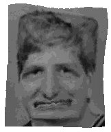

| Hehe, I
was going to edit a pic of Minix (and I still will)...
but I just thought I'd let you have fun with his pic
first =) BWAHAHAHAA.... Instructions: 1. Drag the mouse a small way across the image. 2. Wait a few seconds. 3. Repeat if necessary/wanted. =) Revenge is served! =)-Oliver |
Okay, I thought I'd be fair (and have some more fun =) and do this same thing to everyone... hehee...
Click here (oh, and if you want me to add someone else to this page... like a celebrity, etc. just tell me!)
And a cool thing to do is to do a small thing, like make their eye close, then to press the Undo button really fast a lot of times. This will make it "animated"... it's kinda fun, hehe...

Here's one my mom made using the applet above
=)
Awww... what a perfect couple! LOL!!!
BWAHAHAAA....